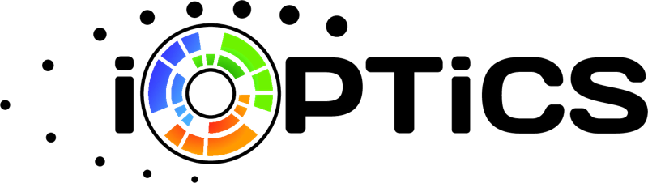
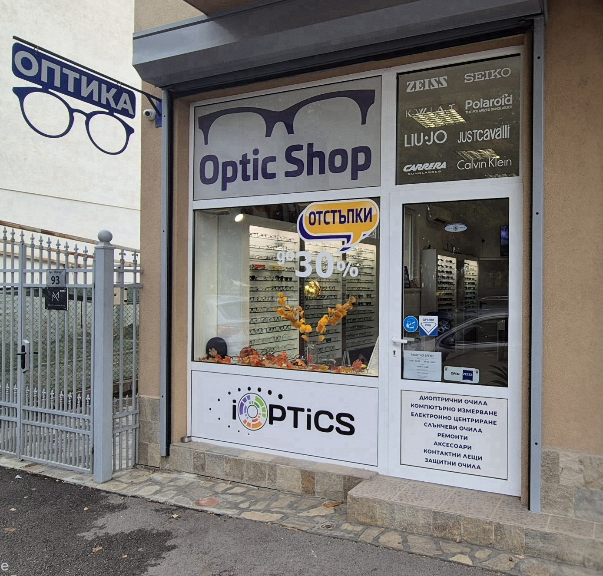

Лещи · Фотохромни
Прозрачни в стаята, тъмни на слънце. Сами се променят според светлината, затова не носите два чифта очила.
Местете плъзгача от вътре към навън и изберете цвят.
Вътре: прозрачни
Специални молекули в лещата реагират на ултравиолетовата светлина и лещата потъмнява.
Когато UV лъчите изчезнат, лещата постепенно става отново прозрачна.
Предпазват очите от UV лъчите и когато са прозрачни.
Често влизате и излизате, работите на открито, не искате да носите отделни слънчеви очила или очите ви са чувствителни към светлина.
Шофирате много през деня на слънце, прекарвате дълго на плаж или на сняг. Тогава отделни слънчеви или поляризирани лещи са по-добрият избор.
Лещи, които потъмняват на слънце и се изсветляват на закрито. Отговорете на няколко въпроса и ще разберете доколко са подходящи за Вашия начин на живот.
Потъмняват за около минута на слънце. Изсветляват по-бавно, обикновено за няколко минути след като влезете вътре.
Обикновено слабо, защото предното стъкло спира голяма част от UV лъчите, които ги активират. Ако шофирате много на слънце, помислете и за отделни слънчеви очила с диоптър.
Фотохромните лещи реагират и на температурата. На студено потъмняват повече, а в жега остават малко по-светли.
В повечето ежедневни ситуации да. За плаж, сняг, вода и дълго шофиране слънчевите или поляризираните лещи дават по-силна защита.
Да. Фотохромни могат да са еднофокусните, прогресивните и офис лещите.
бул. Искър 93, Самоков
